Operación regional ágil y de extremo a extremo: acompañamos cada proyecto desde la validación técnica hasta el soporte post-venta, en cuatro soluciones a lo largo de América Latina.
Acompañamiento en terreno: instalación, puesta en marcha, capacitación y resolución para clientes y distribuidores.
Control de calidad de las implementaciones, validando firmware, conectividad y parámetros eléctricos en cada despliegue.
Validación e implementación de nuevos despliegues en distintos países, con presencia en eventos y ferias del sector.
Revisión técnica de licitaciones y estrategias técnico-comerciales, aportando diferenciación frente a la competencia.
Presentaciones a ejecutivos de empresas eléctricas y apoyo a la relación con clientes y distribuidores en la región.
Herramientas propias de análisis y reportería automatizada que reducen tiempos y mejoran la consistencia del diagnóstico.
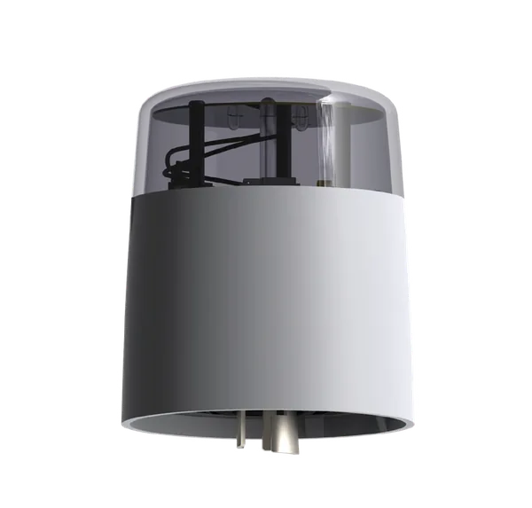
Control y medición punto a punto de la luminaria, sobre el receptáculo que ya existe.
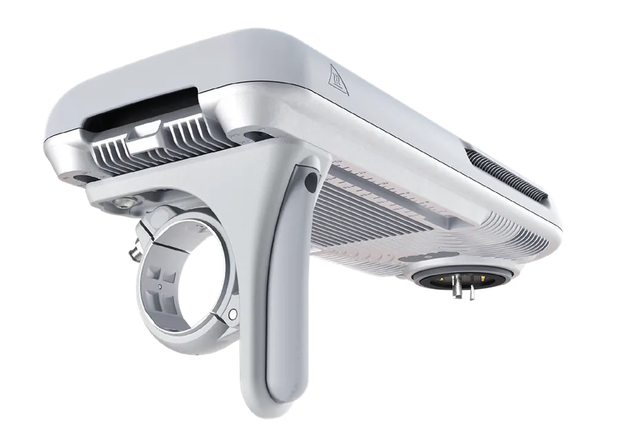
Convierte el poste existente en punto de despliegue de cámaras y otros equipos.
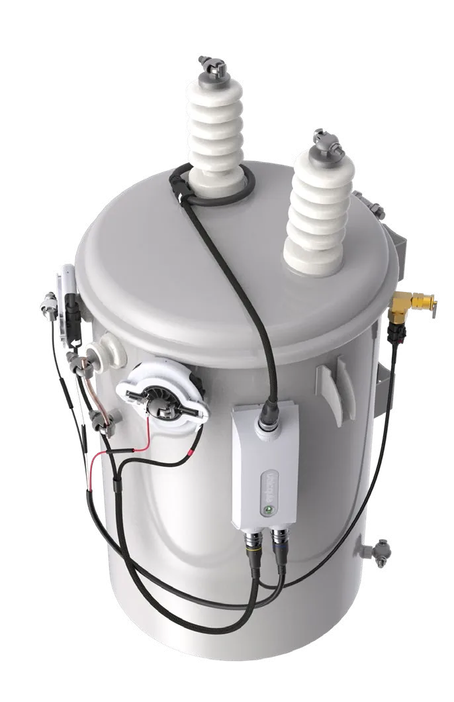
Visibilidad del transformador de distribución, entre la subestación y el medidor.
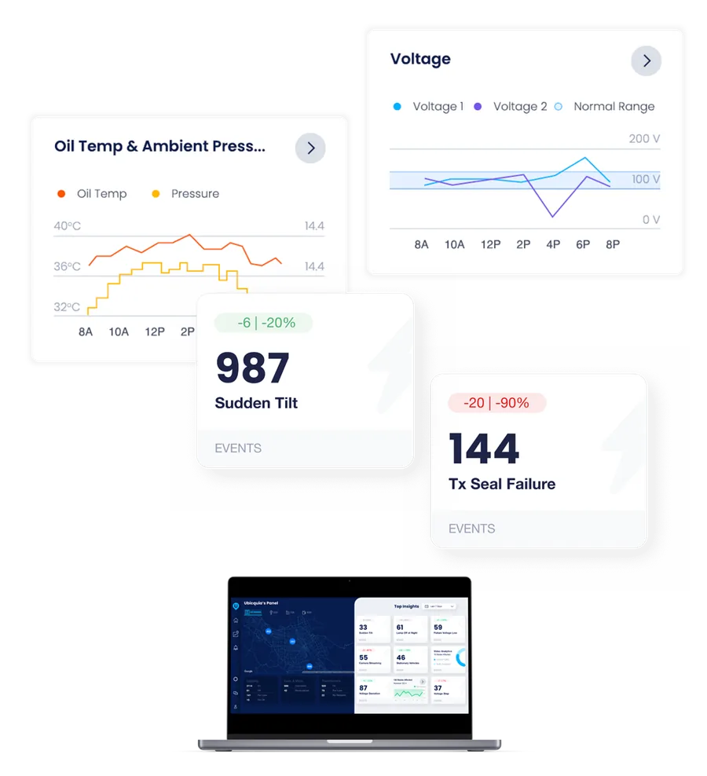
Una sola plataforma en la nube para la iluminación y la red eléctrica.
Estructura compacta que cubre toda la región sin perder cercanía con cada proyecto.
Del primer test técnico a la continuidad post-venta: nos hacemos cargo del ciclo completo.
Representación técnica de Ubicquia ante clientes, distribuidores y ejecutivos del sector.
Más allá de transferir información técnica: impacto concreto en la experiencia y los resultados del cliente.
UbiCell lleva control y visibilidad en tiempo real a cada luminaria. Su tecnología de sensado y comunicación avisa de inmediato cuando hay luminarias encendidas de día, cortes o fallas, y permite agrupar luminarias, programar encendidos a medida y definir perfiles de dimerización que alargan la vida del equipo LED.
Se conecta al receptáculo NEMA estándar y comunica por red celular a UbiVu, nuestra plataforma en la nube: no hay que construir una red aparte. En minutos entrega ubicación y estado de salud de todos los activos de iluminación.
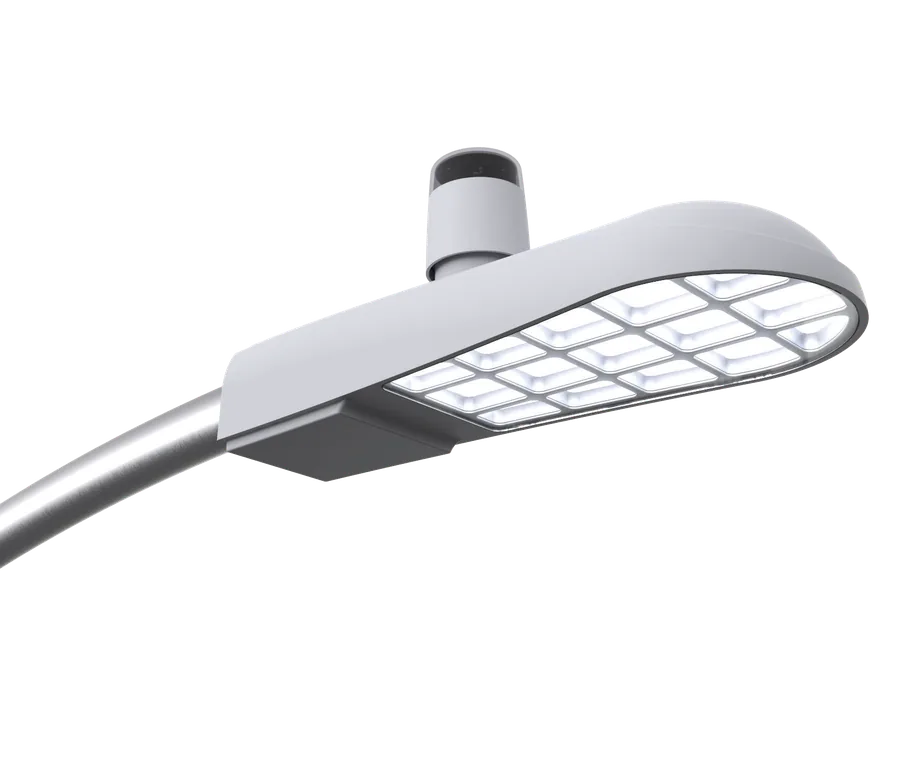
Con la vista en tiempo real, el municipio resuelve la mayoría de las fallas antes de que alguien llame a reclamar.
Niveles de dimerización, programaciones a medida y reportes analíticos, desde la oficina.
El operador identifica interrupciones momentáneas y eventos de voltaje usando la propia luminaria como sensor.
Menos consumo, más vida útil del equipo y menos desplazamientos de cuadrillas.
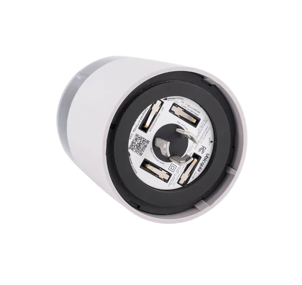
Base de conexión estándar: se instala en segundos.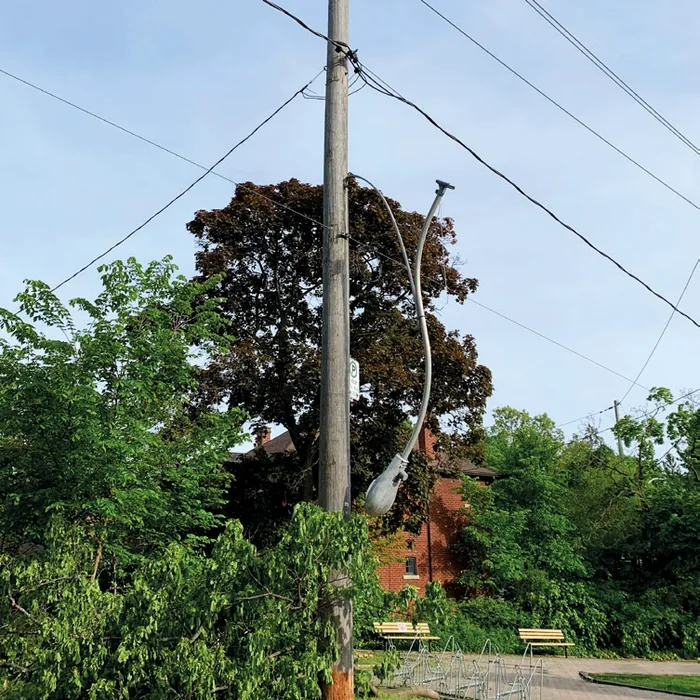
Cada poste pasa a reportar su estado sin visitas a terreno.UbiHub AI+ simplifica el despliegue de cámaras y otros equipos usando la infraestructura de alumbrado que ya existe. Se monta sobre el brazo de la luminaria en cuestión de segundos y entrega energía y conectividad a varios dispositivos a la vez, lo que recorta tiempo, costo e interrupciones en la vía.
En muchos casos el uso de postes existentes reduce o elimina los permisos; cuando hacen falta, Ubicquia ayuda a destrabar los acuerdos de uso del poste. Sin acometidas dedicadas ni gabinetes, el despliegue avanza más rápido y cuesta menos. Además funciona como fotocelda y puede habilitarse después como telegestión completa.
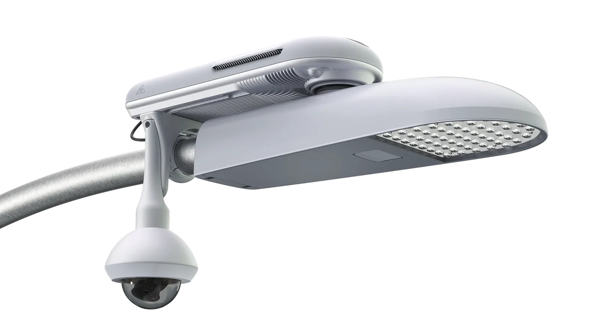
Ubicquia pone el punto de despliegue; la cámara y la analítica siguen siendo del ecosistema de video que el cliente elija.
Convive con las marcas de cámara y los sistemas de gestión de video ya instalados.
Seguridad pública, movilidad y cobertura de eventos sobre la misma red de postes.
Si el punto deja de servir, el equipo se desmonta y se reinstala en otro poste.
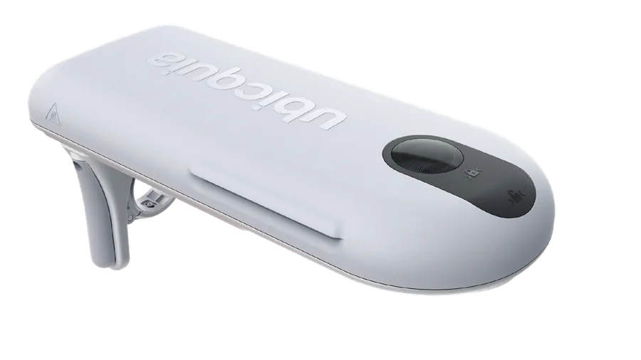
Formato pensado para integrarse al paisaje urbano.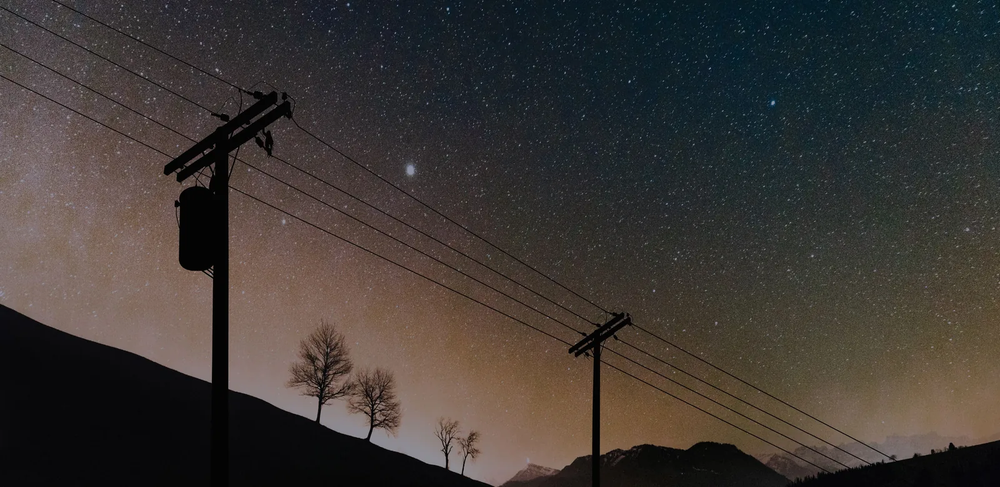
UbiGrid DTM+ brinda claridad sin precedentes a la red de distribución entre la subestación y el medidor. Con el monitoreo en tiempo real del transformador, la empresa eléctrica resuelve problemas en forma proactiva, atiende activamente a sus clientes y reduce costos operativos y administrativos.
Combina capacidades de un sensor seguidor de línea con las de un monitor de transformador: desempeño del equipo, interrupciones en la primaria, cálculos de pérdida de vida y otros parámetros eléctricos. Los datos cobran vida en UbiVu o se integran por API a los sistemas que la empresa ya usa.
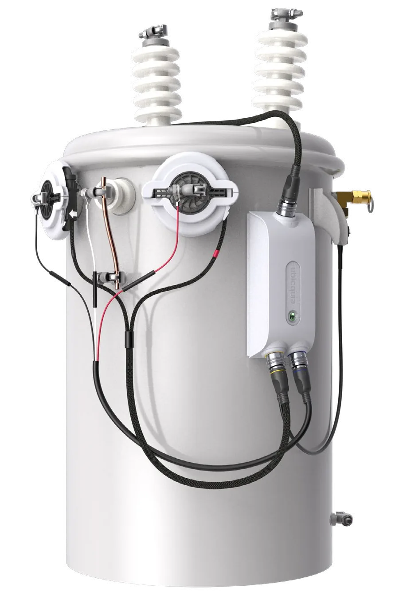
Programas de mantenimiento basados en la condición real del activo, que extienden su vida útil.
Panorama claro de la capacidad: tendencias de carga, desequilibrios de voltaje y transformadores sobrecargados.
Fallas primarias y secundarias e interrupciones momentáneas localizadas rápido, con menor duración del corte.
Anomalías eléctricas detectadas de forma remota para proteger los ingresos y dar una red más segura.
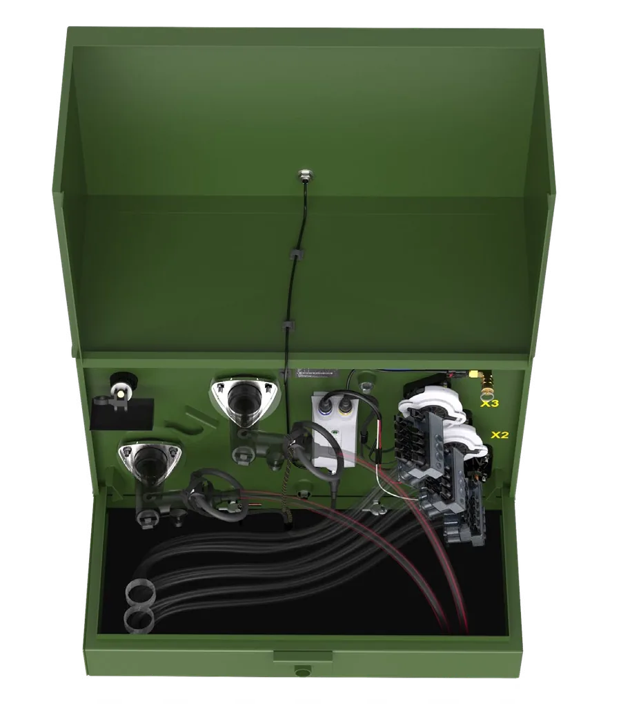
Transformadores de tipo pedestal, en la misma plataforma.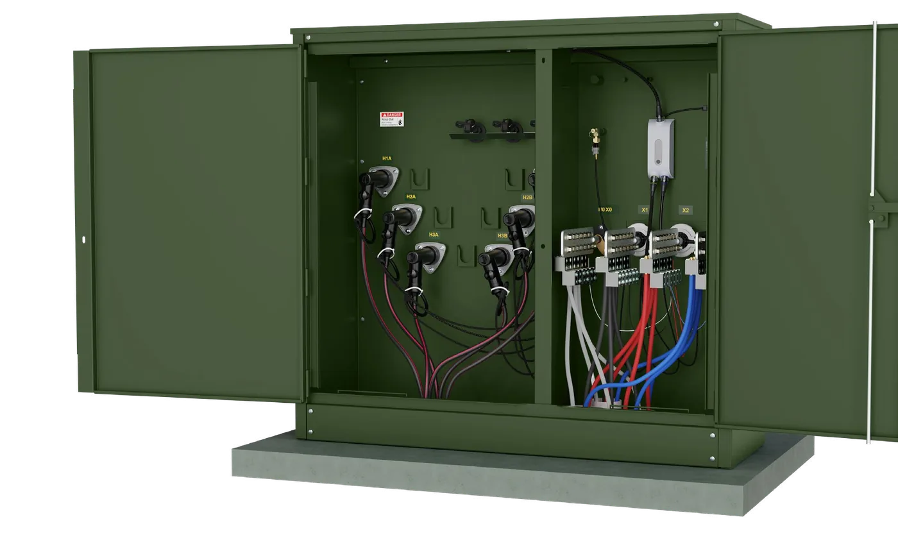
Instalación en minutos, sin intervenir el servicio.UbiVu es la plataforma impulsada por inteligencia artificial que gestiona la iluminación urbana y de servicios públicos, así como la infraestructura de la red eléctrica. Diseñada a escala, convierte los datos en información procesable que mejora la eficiencia, la seguridad y la sostenibilidad.
A través de la gestión por excepción, ayuda a los equipos a concentrarse en lo que realmente importa: detectar cortes de suministro, optimizar el consumo o prevenir fallas. Está basada en la nube, es accesible desde cualquier lugar y admite implementaciones de tipo multiinquilino en distintas ciudades.
UbiVu gestiona más de 680 mil luminarias públicas en todo el mundo. Confían en el sistema ciudades líderes como Los Ángeles, San José y Filadelfia.
UbiVu gestiona equipos de redes eléctricas en todo el mundo y confían en él prestadoras de servicios públicos de primer nivel, entre ellas Duke Energy Services, Florida Power and Light y Memphis Light Gas and Water.
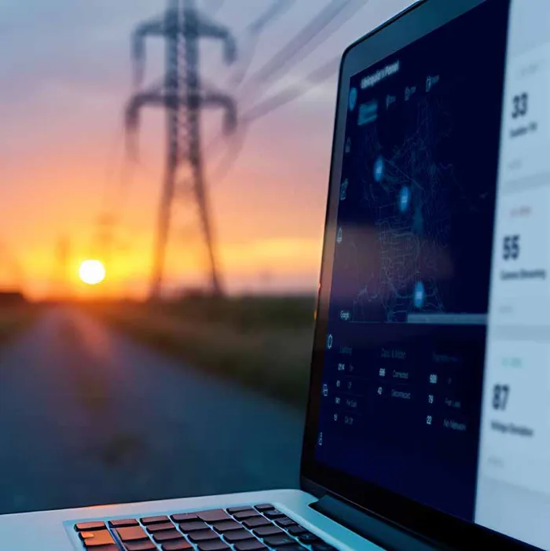
Diagnóstico remoto y validación del estado de los activos: menos visitas físicas a terreno y menor tiempo de resolución.
Vincula postes, transformadores y otros activos con su ubicación real para visualizar implementaciones completas y optimizar la operación.
Informes programables con análisis asistido por IA sobre las implementaciones, el estado de los transformadores, la calidad de la energía y las tormentas.